En bref
Un studio de montage complet, pensé pour les formats courts
Montage Studio Video (MSV) s'adresse aux créateurs de contenu, aux petites équipes et aux entreprises qui publient régulièrement des vidéos sur les réseaux sociaux. Il réunit dans une seule application ce qui demande d'habitude plusieurs outils : le montage, les titres et sous-titres, la voix off, la musique, les scènes animées et la production en série.
Les quatre images ci-dessus viennent d'un Short de 14,5 secondes fabriqué entièrement par MSV : une intro animée, une vidéo avec titre et sous-titres karaoké, une photo animée, un écran final « Abonne-toi », le tout sur une musique générée. Il a été rendu en 15,5 secondes, en 1080 × 1920, sur un ordinateur portable (Intel Core i7 de 13ᵉ génération).
Montage à la main
Coupez, recadrez, assemblez vos vidéos et photos, ajoutez titres, sous-titres, logo et transitions.
Production en série
Un tableau CSV ou un dossier devient des dizaines de vidéos au même style, sans intervention.
Voix off et musique
Voix de synthèse gratuites, ElevenLabs, ou votre propre voix clonée sur votre PC. Musique libre de droits générée à la bonne durée.
Scènes animées
Intro, écran final, liste, chiffres clés, avant / après, question choc : des animations prêtes à remplir.
Installation
Installer et lancer MSV
| Système | Comment l'installer |
|---|---|
| Windows 10 ou 11 (64 bits) | Lancer l'installateur MontageStudioVideo-<version>-Setup.exe, puis ouvrir Montage Studio Video depuis le menu Démarrer. Aucun droit administrateur n'est demandé et Python n'a pas besoin d'être installé. |
| macOS et Linux | Avec Python 3.11 ou plus récent, lancer le script lancer_mac_linux.sh. |
Au premier lancement, MSV télécharge ses composants (environ 400 Mo, une seule fois). L'outil de traitement vidéo FFmpeg est fourni : il n'y a rien d'autre à installer. L'application s'ouvre ensuite dans votre navigateur, à l'adresse http://127.0.0.1:7860, qui n'est accessible que depuis votre ordinateur.
| Où sont vos fichiers (version installée) | Contenu |
|---|---|
Documents\Montage Studio Video | Vos médias importés, vos vidéos produites, vos projets et vos modèles |
%LOCALAPPDATA%\MontageStudioVideo | Fichiers internes : composants, cache, voix téléchargées, clé ElevenLabs |
Configuration conseillée. Un ordinateur récent suffit pour le montage. Une carte graphique NVIDIA, Apple ou Intel accélère l'export. Le clonage de votre propre voix fonctionne au mieux avec une carte NVIDIA ; la documentation a été réalisée sur un portable Core i7 13ᵉ génération, 16 Go de mémoire, RTX 4060.
Tant que l'installateur n'est pas signé numériquement, Windows peut afficher « Windows a protégé votre ordinateur » : cliquez sur Informations complémentaires puis Exécuter quand même.
Prise en main
L'interface
Tout se passe dans une seule fenêtre, organisée en six onglets. Le sélecteur en haut à droite change la langue de l'interface : français, anglais, italien ou espagnol.
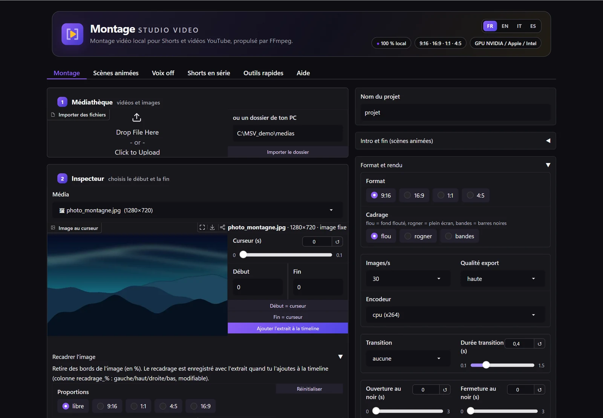
| Onglet | À quoi il sert |
|---|---|
| Montage | Assembler une vidéo : importer, couper, recadrer, ajouter calques, titre, sous-titres, audio, puis exporter. |
| Scènes animées | Créer des séquences animées (intro, écran final, liste…) et les ajouter au montage. |
| Voix off | Transformer un texte en voix, avec ses sous-titres synchronisés. |
| Shorts en série | Produire automatiquement une vidéo par ligne d'un tableau ou par fichier d'un dossier. |
| Outils rapides | Miniature YouTube, conversion en Short, extraction du son, transcription, retrait de logo. |
| Aide | Le mode d'emploi résumé, dans la langue choisie. |
Onglet Montage
Monter une vidéo, étape par étape
-
Importer vos médias
Glissez vos vidéos, photos et sons dans la médiathèque, ou indiquez un dossier de votre ordinateur pour tout importer d'un coup. Les fichiers glissés sont copiés dans le dossier de travail de MSV et restent disponibles d'une séance à l'autre ; un dossier indiqué est utilisé sur place, sans copie.
-
Choisir le début et la fin de chaque extrait
Dans l'inspecteur, déplacez le curseur image par image, puis fixez le début et la fin avec « Début = curseur » et « Fin = curseur ». Deux aides complètent l'inspecteur :
- Recadrer l'image : retirez des bords (en %), ou gardez d'un clic la plus grande zone au format 9:16, 1:1, 4:5 ou 16:9. La zone gardée s'affiche encadrée sur l'image.
- Convertisseur de temps : tapez « 1h 2m 3s », « 1:30 » ou « 2,5 min », MSV donne l'équivalent en secondes, minutes et heures, et peut le reporter dans le début ou la fin.
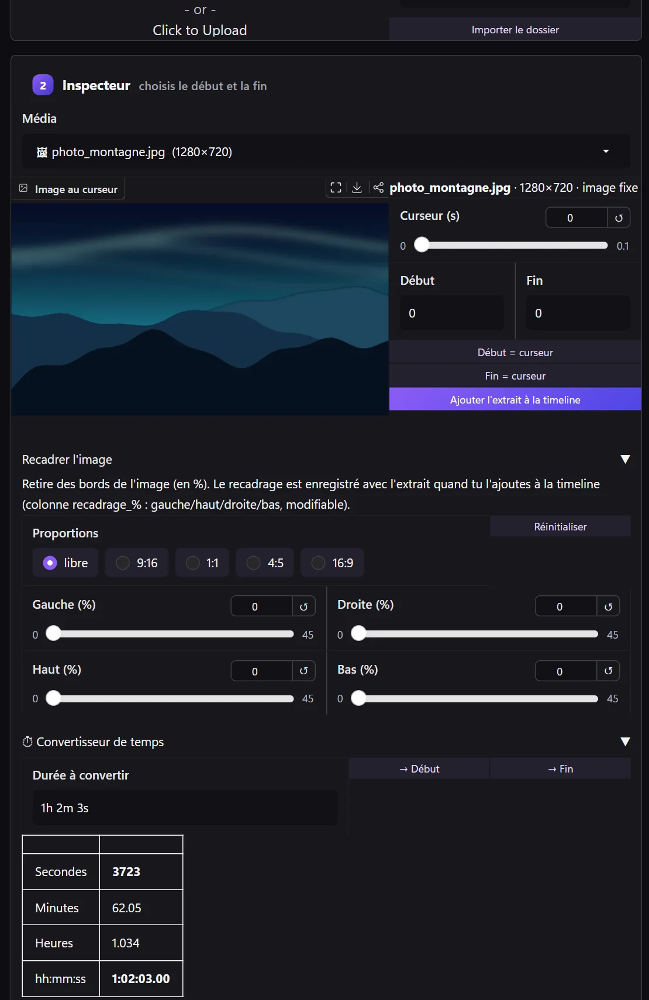
Inspecteur : recadrage aux proportions 9:16 et convertisseur de temps (1 h 2 min 3 s = 3 723 s). -
Organiser la timeline et ajouter des calques
Chaque extrait devient une ligne de la timeline. Les cellules se modifient directement : ordre, début, fin, vitesse (de 0,1 à 4), volume, position du cadrage, durée d'une photo, recadrage et mouvement d'une photo.
La section Calques ajoute des éléments par-dessus la vidéo, avec leurs heures d'apparition et de disparition :
- Image ou vidéo incrustée : logo, sticker, capture d'écran ou vidéo en « picture-in-picture ». Les images opaques et les vidéos ont des coins arrondis.
- Texte animé : autant de textes que nécessaire, avec taille, couleur, fond et position.
- Chaque calque a une entrée animée au choix : fondu, montée ou zoom avec un léger rebond.
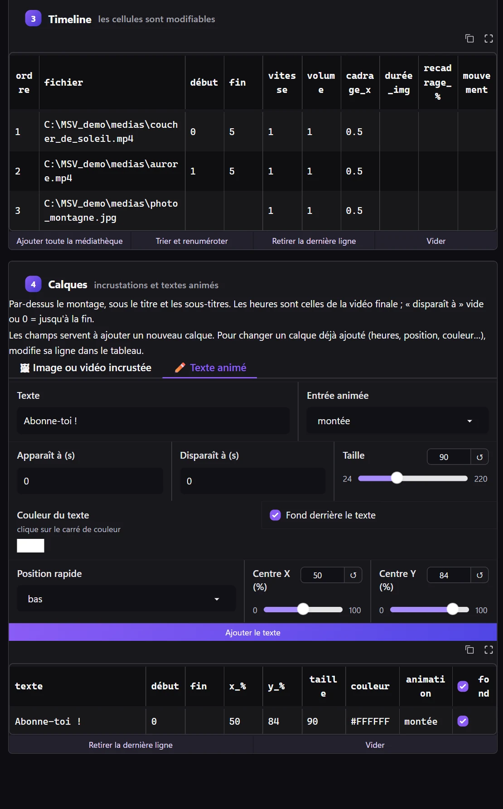
Timeline de trois extraits (deux vidéos et une photo) et un texte animé « Abonne-toi ! » qui monte en bas de l'image. -
Régler le format et le cadrage
Choisissez le format de sortie : 9:16 (1080 × 1920, Shorts, Reels, TikTok), 16:9 (1920 × 1080, YouTube), 1:1 (1080 × 1080) ou 4:5 (1080 × 1350). Quand une vidéo n'a pas les bonnes proportions, trois cadrages sont possibles :
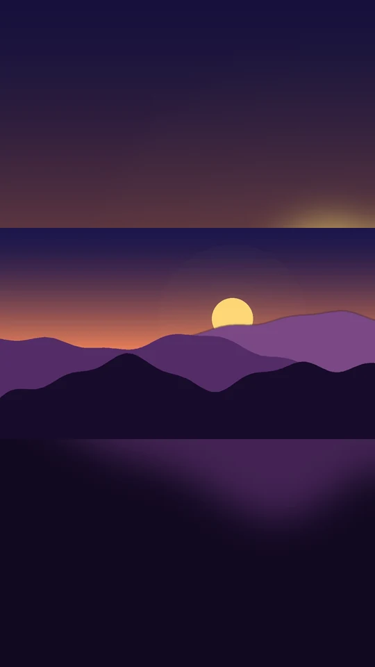
FlouImage entière sur fond flouté 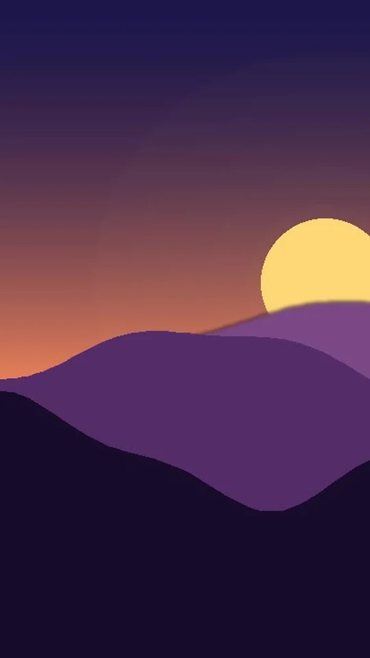
RognerPlein écran, côtés coupés 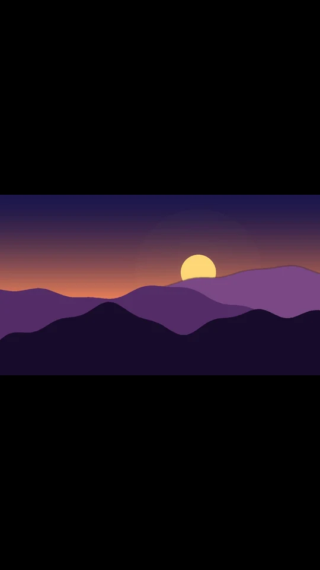
BandesBarres noires Les mêmes réglages définissent les transitions entre extraits (fondu enchaîné, fondu au noir, dissolution, glissement à gauche ou vers le haut, balayage, zoom, cercle), leur durée, et l'ouverture ou la fermeture au noir.
Pour les photos, le mouvement (effet Ken Burns) anime l'image : zoom avant ou arrière, panoramique vers la gauche ou la droite, ou « Ken Burns », qui combine zoom lent et déplacement avec un trajet différent à chaque photo. La colonne « mouvement » de la timeline règle une photo précise.
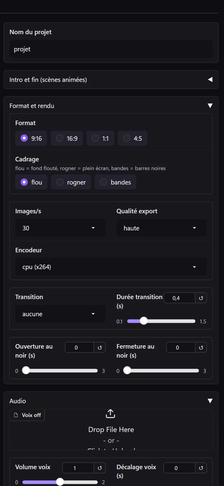
Format, cadrage, images par seconde, qualité, encodeur et transitions. -
Ajouter le son : voix off, musique, nettoyage
- Voix off : un fichier audio, son volume et son décalage. Elle peut venir de l'onglet Voix off en un clic.
- Musique de fond : votre fichier, bouclé sur toute la vidéo, ou une musique générée libre de droits, composée sur votre PC à la durée exacte de la vidéo. Quatre ambiances : calme, inspirant, énergique, suspense. Le bouton « Écouter 12 s » en donne un extrait.
- Ducking : la musique baisse automatiquement quand quelqu'un parle.
- Normalisation du volume à -14 LUFS, le niveau visé par YouTube.
- Suppression des silences : les blancs d'une vidéo filmée sont coupés automatiquement (seuil et durée réglables).
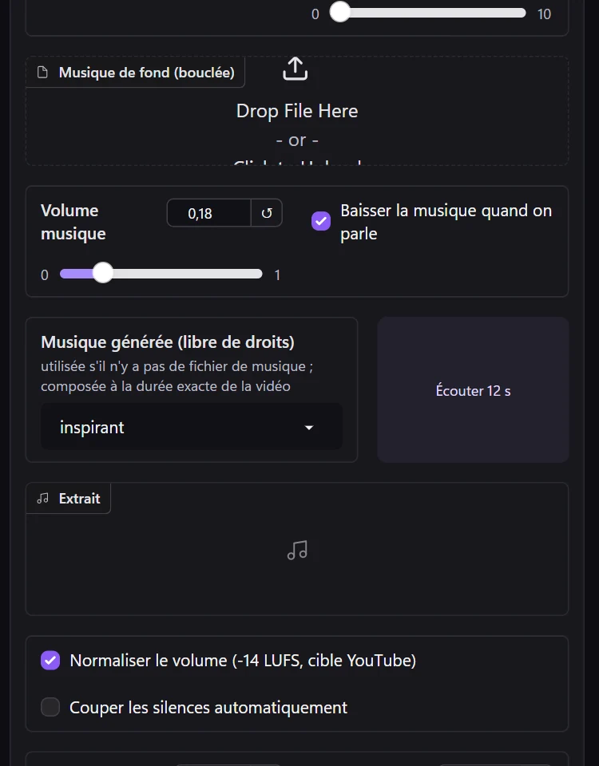
Musique générée « inspirant », musique baissée pendant la voix, volume normalisé. -
Titre et sous-titres
Le titre s'affiche aux heures choisies, avec sa police, sa couleur, sa taille, sa position et un bandeau optionnel. Les sous-titres ont cinq sources possibles :
Source Fonctionnement script Vous collez le texte ; MSV le découpe et le minute automatiquement, sur la durée de la voix off s'il y en a une. srt Un fichier de sous-titres existant, par exemple celui produit par l'onglet Voix off. whisper Transcription automatique au mot près de ce qui est dit (module optionnel à installer une fois). vidéo Les sous-titres déjà intégrés au fichier (MP4, MKV), dans la langue choisie, recalés après les coupes. aucun Pas de sous-titres. Le mode karaoké met en couleur le mot prononcé. Le nombre de mots par sous-titre, la police, les couleurs, le contour, la position et les majuscules se règlent. Un fichier
.srtest toujours exporté à côté de la vidéo.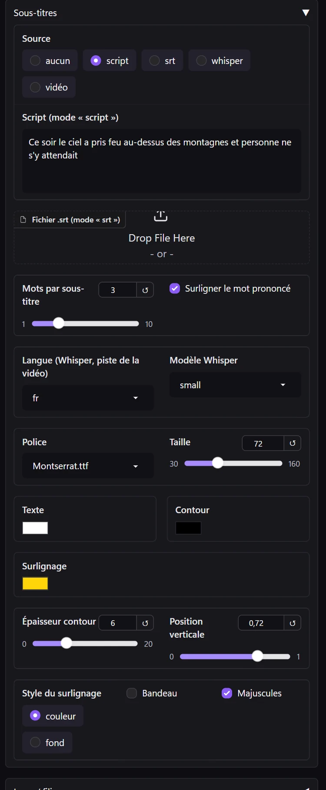
Source « script », karaoké et style. 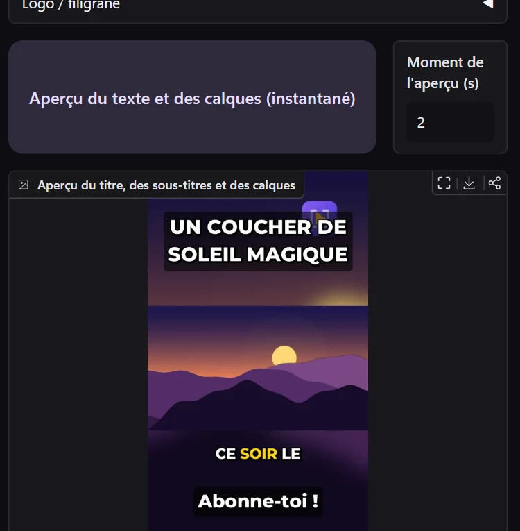
L'aperçu instantané montre le titre, les sous-titres et les calques visibles au moment choisi, sans attendre le rendu. Un logo ou filigrane (PNG transparent conseillé) peut aussi être posé dans un des quatre coins ou au centre, avec sa taille et son opacité.
-
Prévisualiser et exporter
Aperçu rapide fabrique la vidéo en demi-résolution, en quelques secondes, pour vérifier le montage. Exporter la vidéo produit le fichier final : MP4 (H.264 et AAC), prêt pour la publication, accompagné de son fichier
.srt. Trois niveaux de qualité sont proposés (aperçu, standard, haute). L'export peut utiliser la carte graphique (NVIDIA, Apple ou Intel) ; si elle n'est pas disponible, MSV repasse automatiquement sur le processeur.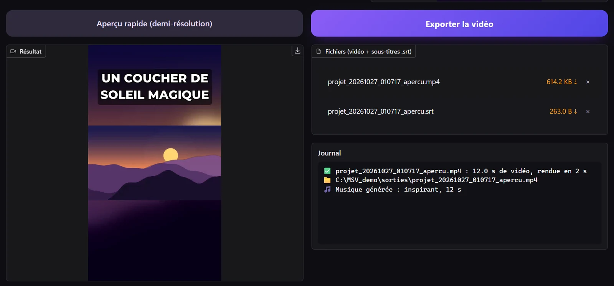
Aperçu rapide : 12 secondes de vidéo rendues en 2 secondes, avec la musique générée. Le journal indique chaque étape. Dans « Projets et modèles », un projet s'enregistre et se recharge, et ses réglages peuvent devenir un modèle réutilisable pour la production en série.
Onglet Scènes animées
Des animations prêtes à remplir
Les scènes animées apportent le rendu « motion design » des vidéos professionnelles sans logiciel spécialisé. Vous choisissez une scène, remplissez ses textes, et MSV fabrique un clip vidéo au format de votre choix. Un mot écrit entre étoiles, comme *suite*, prend la couleur d'accent.
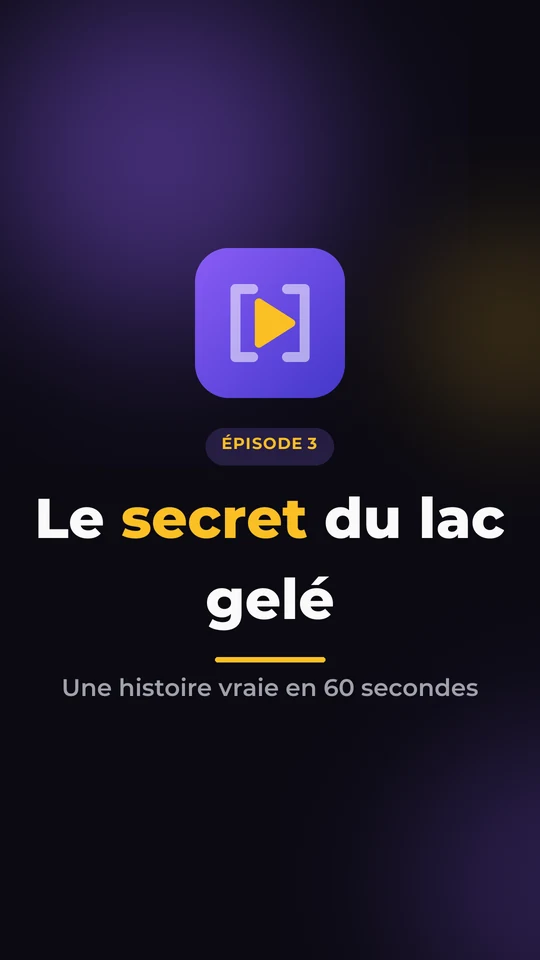
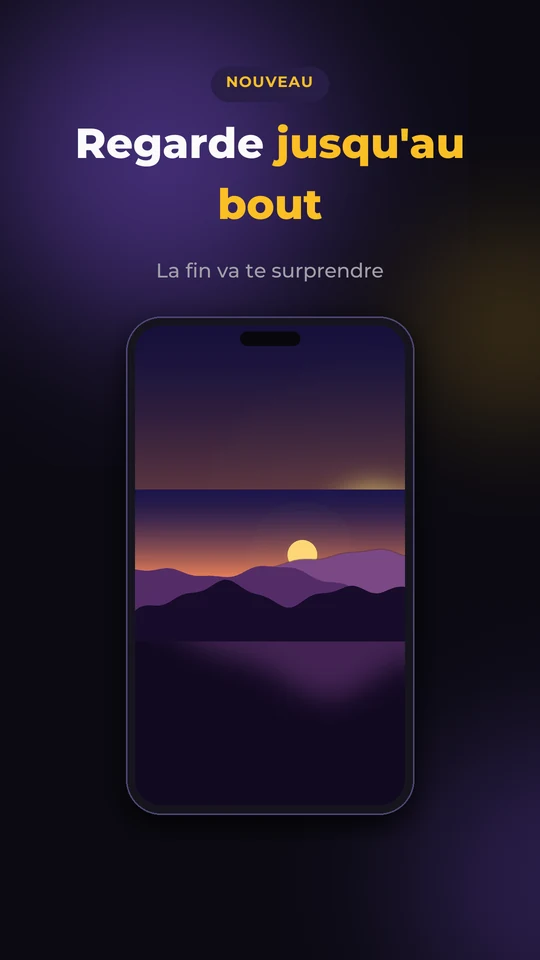
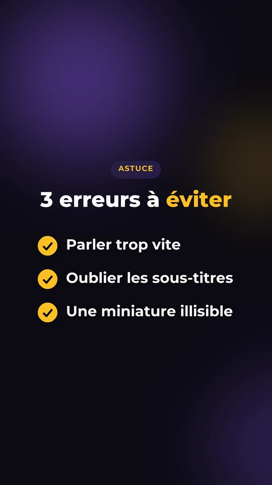
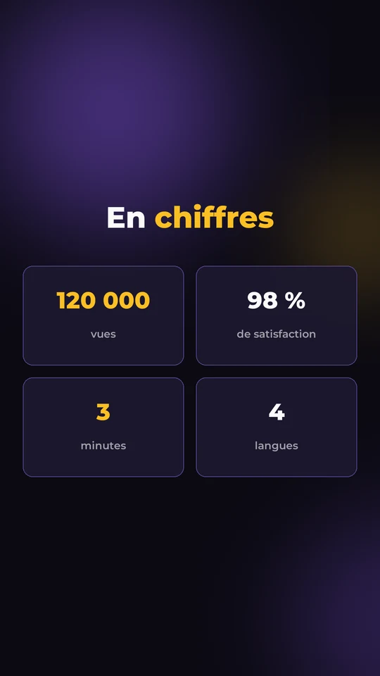
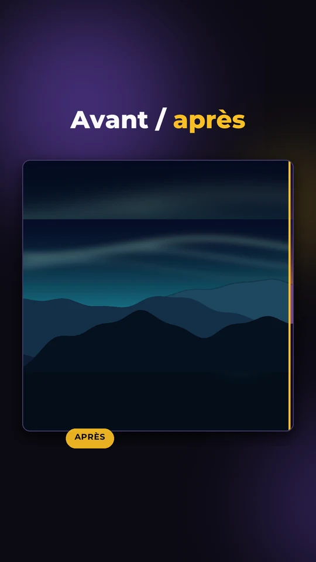
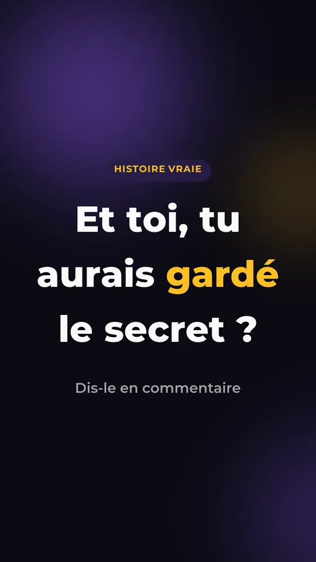
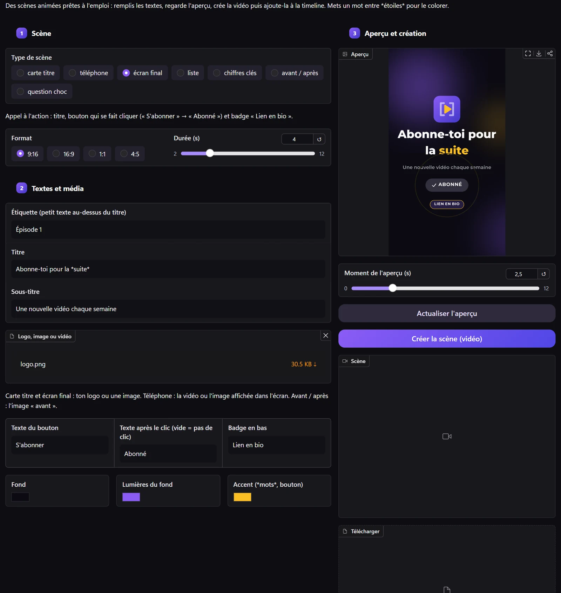
Utiliser une scène
- Créer la scène fabrique un clip MP4 (une scène de 4 secondes en 1080 × 1920 prend environ 7 secondes), puis Ajouter à la timeline la place à la fin du montage.
- Utiliser comme intro / fin du projet ajoute la scène automatiquement à chaque rendu, au format du projet. La voix off, le titre et les sous-titres sont décalés pour commencer après l'intro.
- Si le texte est long ou le format petit, la scène réduit sa taille d'elle-même pour que rien ne sorte de l'image.
Onglet Voix off
Transformer un texte en voix
Écrivez le texte de la narration. Une ligne contenant seulement --- sépare les scènes : MSV produit une piste par scène, une piste complète et le fichier de sous-titres .srt synchronisé. Un bouton envoie la voix et ses sous-titres directement dans l'onglet Montage.
| Moteur | Qualité | Coût | Où ça tourne |
|---|---|---|---|
| Piper | Correcte. 9 voix en français, anglais et espagnol, toutes autorisées pour un usage commercial. | Gratuit | Sur votre PC, hors ligne |
| ElevenLabs | Très naturelle, sous-titres minutés exactement, vos voix ElevenLabs disponibles. | Abonnement ElevenLabs | Service en ligne (clé API) |
| Ma voix clonage local | Très bonne : votre propre voix, recréée à partir d'un enregistrement de 10 à 60 secondes. | Gratuit | Sur votre PC, hors ligne |
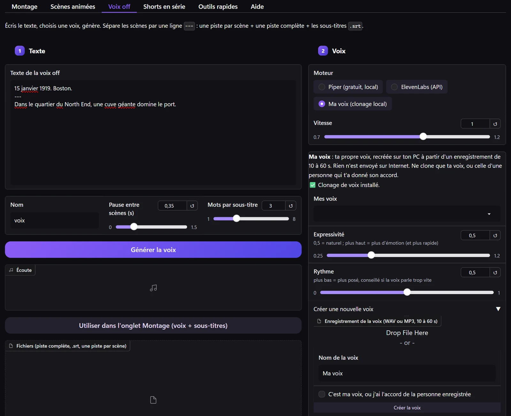
Cloner votre voix
- Enregistrez 30 à 60 secondes de votre voix dans une pièce calme, avec le ton de vos vidéos.
- Dans « Créer une nouvelle voix », ajoutez l'enregistrement, donnez un nom et cochez la case de consentement.
- Choisissez ensuite la voix comme n'importe quelle autre. Deux réglages ajustent le résultat : l'expressivité et le rythme.
Consentement et transparence. On ne clone que sa propre voix, ou celle d'une personne qui a donné son accord. Chaque audio produit porte un filigrane inaudible qui permet de reconnaître une voix de synthèse. L'enregistrement et la voix clonée restent sur votre ordinateur.
La première utilisation installe le moteur de clonage (environ 5 Go, une seule fois). Sur une carte NVIDIA RTX 4060, la première phrase prend environ 45 secondes (chargement du modèle compris), les suivantes quelques secondes.
L'encadré Remplacer la voix d'un clip existant corrige une scène déjà montée : la voix d'origine est retirée et la nouvelle est posée au moment choisi, au même volume qu'un clip de référence.
Onglet Shorts en série
Des dizaines de vidéos au même style
Le principe : le modèle fixe le style, le tableau fixe le contenu. Une ligne du tableau donne une vidéo terminée. Le modèle peut être celui de l'onglet Montage ou un modèle fourni : Short à partir d'une vidéo filmée, Short narratif (storytelling), Short pour les tout-petits, vidéo YouTube 16:9.
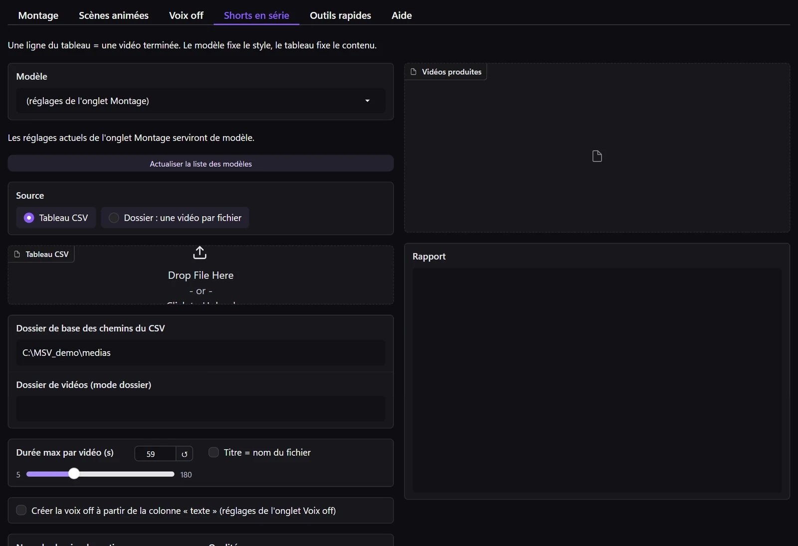
id;medias;titre;texte;voix_off;musique;intro;outro histoire_01;histoires/01/*.jpg;Le lac gelé;Ce soir, je vous raconte...;;auto:suspense;Le *secret* | épisode 1;Abonne-toi histoire_02;histoires/02;La cuve de Boston;Le 15 janvier 1919...;;auto:suspense;La *vague* | épisode 2;Abonne-toi
| Colonne | Contenu |
|---|---|
id | Nom du fichier produit |
medias | Fichiers séparés par |, un dossier entier, ou un motif comme images/*.jpg |
titre | Titre affiché au début |
texte | Script des sous-titres ; MSV peut aussi en faire la voix off automatiquement |
srt, voix_off | Fichier de sous-titres, fichier de narration |
musique | Un fichier, ou auto / auto:suspense pour une musique générée |
debut, fin | Portion à garder des vidéos (en secondes) |
recadrage | % retirés de chaque bord : gauche/haut/droite/bas, par exemple 10/0/10/0 |
intro, outro | « Titre | sous-titre » d'une scène animée d'ouverture et de fin, dans le style du modèle |
Quand une ligne contient des photos et une voix off, les photos sont réparties automatiquement sur la durée de la voix. Le mode dossier transforme chaque vidéo d'un dossier en Short (durée maximale réglable, titre tiré du nom de fichier en option). Une ligne en erreur n'arrête pas la série : le rapport indique ce qui a réussi et ce qui a échoué.
Onglet Outils rapides
Les tâches courantes en un clic
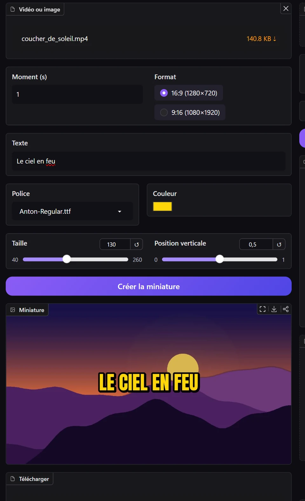
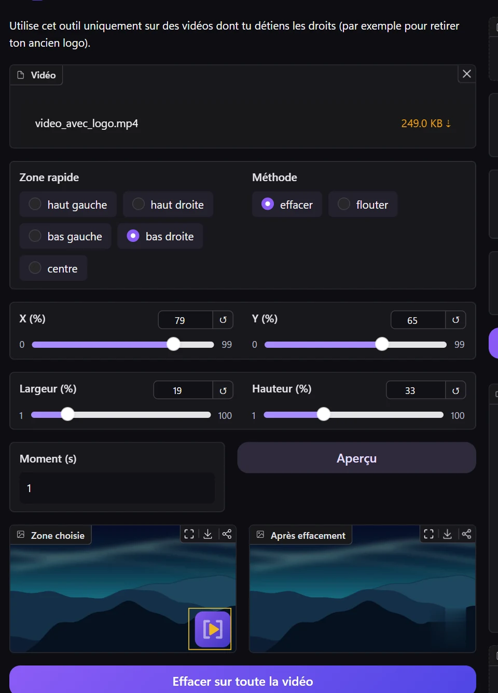
| Outil | Ce qu'il fait |
|---|---|
| Miniature YouTube | Image tirée de la vidéo au moment choisi, texte avec police, taille, couleur et position. |
| Vidéo → Short 9:16 | Conversion en un clic, avec cadrage au choix, durée maximale et silences coupés. |
| Extraire l'audio | Le son d'une vidéo en MP3. |
| Transcrire en .srt | Sous-titres automatiques d'un audio ou d'une vidéo avec Whisper (module optionnel). |
| Effacer un logo | Efface ou floute une zone (logo, filigrane, texte) sur toute la vidéo, avec aperçu. Réservé aux vidéos dont vous détenez les droits. |
| Logo MSV | Ajoute votre logo en mémorisant sa position dans la vidéo, ce qui permet de l'enlever proprement plus tard. |
Sous le capot
Comment une vidéo est fabriquée
MSV s'appuie sur FFmpeg, l'outil de référence du traitement vidéo, et dessine textes et animations avec la bibliothèque Pillow. Le rendu est donc identique sous Windows, macOS et Linux. Chaque export suit ces étapes :
flowchart LR A["Vos médias
vidéos, photos, sons"] --> B["1. Préparation
coupe, vitesse, recadrage,
cadrage au format"] S["Scènes animées
intro et fin"] --> B B --> C["2. Assemblage
transitions"] C --> D["3. Habillage
calques, titre,
sous-titres, logo"] D --> E["4. Son
voix off, musique,
ducking, -14 LUFS"] E --> F["Vidéo MP4
+ sous-titres .srt"]
- Préparation : chaque extrait est coupé, accéléré ou ralenti, recadré et mis au format de sortie (flou, rogner ou bandes). Les photos sont animées. Les silences sont retirés si l'option est active. L'intro et la fin animées sont fabriquées à ce moment.
- Assemblage : les extraits sont mis bout à bout, avec les transitions choisies sur l'image et sur le son.
- Habillage : les calques, le titre, les sous-titres et le logo sont posés par-dessus, chacun à ses heures.
- Son : la voix off et la musique sont mélangées ; la musique baisse quand quelqu'un parle et le volume est normalisé.
| Caractéristique | Valeur |
|---|---|
| Formats de sortie | 9:16 (1080 × 1920), 16:9 (1920 × 1080), 1:1 (1080 × 1080), 4:5 (1080 × 1350) |
| Fichier produit | MP4, vidéo H.264, son AAC, lecture rapide sur le web (« faststart »), sous-titres .srt |
| Images par seconde | 24, 25, 30 ou 60 |
| Volume | Normalisé à -14 LUFS (niveau YouTube) |
| Accélération matérielle | NVIDIA NVENC, Apple VideoToolbox, Intel Quick Sync, avec repli automatique sur le processeur |
| Langues de l'interface | Français, anglais, italien, espagnol |
| Automatisation | Ligne de commande pour rendre un projet, une série CSV, un dossier ou une voix off |
Des erreurs expliquées
Quand quelque chose ne va pas, MSV ne montre pas un message technique. Il dit ce qui s'est passé et ce qu'il faut faire, par exemple :
Ligne 1 de la timeline : la fin (2 s) est avant le début (5 s).
Que faire : corrigez les colonnes « début » et « fin » ; la fin doit être plus grande que le début (laissez « fin » vide pour aller jusqu'au bout du fichier).
Les erreurs de saisie (heure mal écrite, recadrage, fichier CSV), les valeurs impossibles (fichier introuvable, fin avant le début) et les problèmes de l'ordinateur (fichier abîmé ou ouvert ailleurs, disque plein, Internet) ont chacun leur explication. Les détails techniques sont gardés dans un journal, utile en cas de demande d'assistance.
Confidentialité et sécurité
Vos fichiers restent chez vous
- Traitement 100 % local : montage, rendu, voix Piper, voix clonée et musique générée fonctionnent sur votre ordinateur, même hors ligne.
- Aucune statistique d'usage n'est envoyée.
- Internet n'est utilisé que si vous le choisissez : pour ElevenLabs, et pour le premier téléchargement d'une voix Piper, du modèle Whisper ou du moteur de clonage.
- Application fermée aux autres sites : l'interface n'est accessible que depuis votre ordinateur et refuse les requêtes venant d'autres sites web, ainsi que l'affichage dans une page tierce.
- Fichiers internes protégés : le code de l'application, votre clé ElevenLabs et vos voix clonées ne peuvent pas être téléchargés depuis l'interface.
Limites actuelles
Ce que MSV ne fait pas (encore)
- Pas de timeline graphique à glisser-déposer avec lecture en direct : le montage se fait dans un tableau, avec un aperçu instantané et un aperçu vidéo rapide.
- Les animations sont des modèles prêts à l'emploi (scènes, entrées de calques) : il n'y a pas d'animation libre image par image comme dans un logiciel de motion design.
- La transcription Whisper est un module optionnel à installer une fois.
- Le clonage de voix demande environ 5 Go et donne ses meilleurs temps avec une carte graphique NVIDIA.
- La musique générée propose quatre ambiances ; pour un morceau précis, utilisez votre propre fichier.
Questions fréquentes
Questions fréquentes
- Faut-il une connexion Internet ?
- Seulement pour l'installation et les premiers téléchargements (composants, voix, modèles). Ensuite, MSV fonctionne hors ligne, sauf si vous utilisez ElevenLabs.
- Faut-il un abonnement ?
- Non. MSV est un logiciel libre (licence GPL v3). Seul ElevenLabs, optionnel, est un service payant.
- Puis-je publier les vidéos produites, y compris pour un usage commercial ?
- Oui. Les voix Piper proposées ont toutes une licence qui autorise l'usage commercial, la musique générée est composée sur votre PC, et les polices fournies (Montserrat, Anton) sont sous licence libre SIL OFL. Vous restez responsable des droits sur vos propres médias.
- Quelle durée de vidéo est possible ?
- MSV est optimisé pour les formats courts, mais produit aussi des vidéos YouTube 16:9 de plusieurs minutes. Le temps de rendu dépend de la longueur et de la qualité choisie ; l'aperçu rapide permet de vérifier avant l'export final.
- Mes projets sont-ils sauvegardés ?
- Un projet s'enregistre en un clic (fichier
.json) et se recharge plus tard. Ses réglages peuvent aussi devenir un modèle de série. - Peut-on automatiser la production ?
- Oui, avec l'onglet Shorts en série ou la ligne de commande, qui rend un projet, une série CSV, un dossier ou une voix off sans ouvrir l'interface.